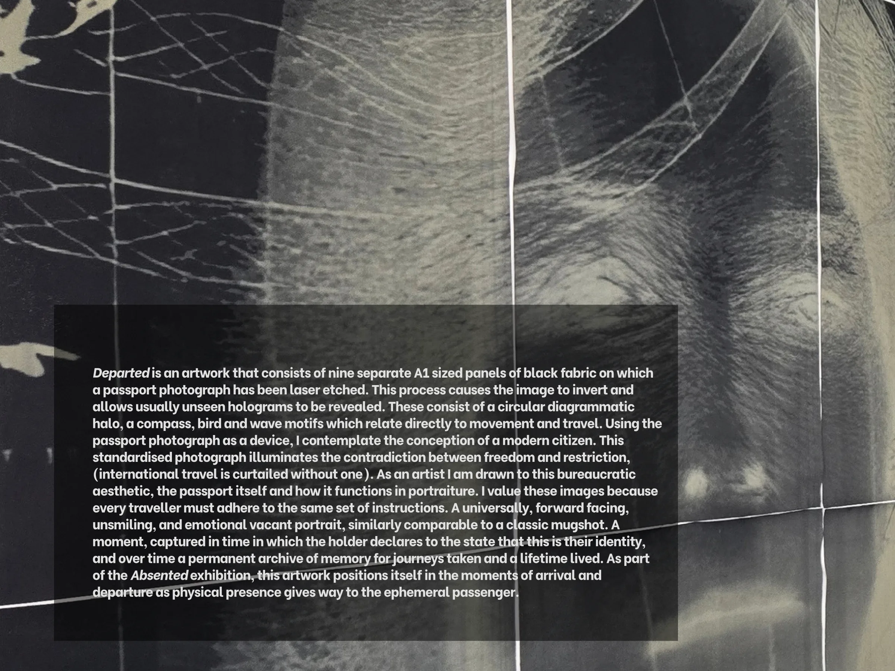

Departed is an artwork that consists of nine separate A1 sized panels of black fabric on which a passport photograph has been laser etched. This process causes the image to invert and allows usually unseen holograms to be revealed. These consist of a circular diagrammatic halo, a compass, bird and wave motifs which relate directly to movement and travel. Using the passport photograph as a device, I contemplate the conception of a modern citizen. This standardised photograph illuminates the contradiction between freedom and restriction, (international travel is curtailed without one). As an artist I am drawn to this bureaucratic aesthetic, the passport itself and how it functions in portraiture. I value these images because every traveller must adhere to the same set of instructions. A universally, forward facing, unsmiling, and emotional vacant portrait, similarly comparable to a classic mugshot. A moment, captured in time in which the holder declares to the state that this is their identity, and over time a permanent archive of memory for journeys taken and a lifetime lived. As part of the Absented exhibition, this artwork positions itself in the moments of arrival and departure as physical presence gives way to the ephemeral passenger.
